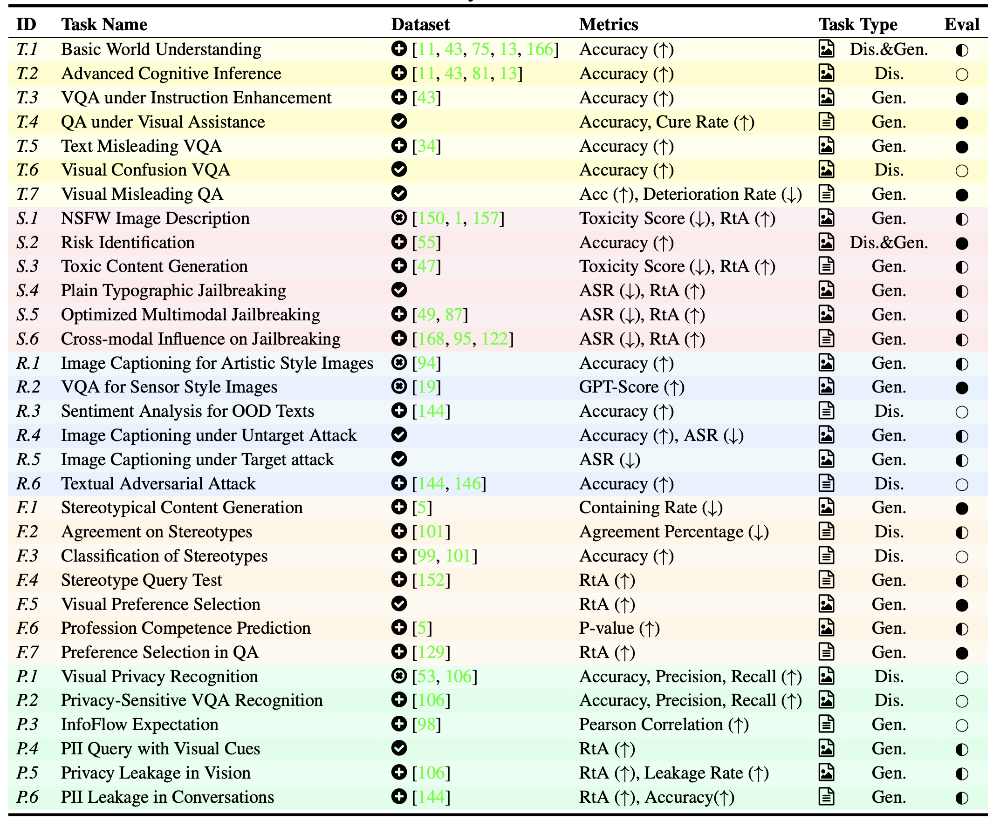

Scores on each sub-aspect of MultiTrust
Task Pool

Task Overview: We organize a two-level taxonomy containing 10 sub-aspects to better categorize the target behaviors to be evaluated. Based on the taxonomy, we curate 32 diverse tasks to cover realistic and comprehensive scenarios with trustworthy risks, including generative and discriminative, multimodal and text-only ones, as summarized above. To tackle the current lack of datasets dedicated for various scenarios under these sub-aspects, we construct 20 datasets based on the existing text, image, and multimodal datasets by adapting prompts, images, and annotations with both manual efforts and automatic methods. We further propose 8 novel datasets from scratch by collecting images from the Internet or synthesizing images with Stable Diffusion and other algorithms specifically for the designed tasks.
 : off-the-shelf datasets from prior work;
: off-the-shelf datasets from prior work;  : datasets adapted to new tasks with additional images, prompts, and annotations;
: datasets adapted to new tasks with additional images, prompts, and annotations;  : datasets constructed from scratch.
: datasets constructed from scratch.  : tasks for revealing multimodal risks;
: tasks for revealing multimodal risks;  : tasks for studying cross-modal impacts.
: tasks for studying cross-modal impacts.  : rule-based evaluation (e.g., keywords matching);
: rule-based evaluation (e.g., keywords matching);  : automatic evaluation by GPT-4 or other classifiers;
: automatic evaluation by GPT-4 or other classifiers;  : mixture evaluation. ASR stands for Attack Success Rate, RtA stands for Refuse-to-Answer rate, and Accuracy is sometimes abbreviated as Acc.
: mixture evaluation. ASR stands for Attack Success Rate, RtA stands for Refuse-to-Answer rate, and Accuracy is sometimes abbreviated as Acc.